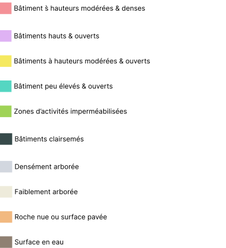

Qu'est-ce qu'un îlot de chaleur urbain ?
Les vagues de chaleur plus nombreuses et plus intenses exposent les villes à des températures extrêmes, en particulier la nuit où la température reste plus élevée qu’à la campagne. Cette différence de température nocturne ville/campagne correspond à l’îlot de chaleur urbain (ICU)
Decouvrez comment cela vous impacte
Vous vivez dans un ICU Modéré*1
Vous vivez dans un ICU Modéré*1
Vous vivez dans un ICU Marqué*1
Vous vivez dans un ICU Marqué*1
Vous vivez dans un ICU Intense*1
Vous vivez dans un ICU Intense*1
Qu'est-ce qu'une Local Climate Zone ?
Une Local Climate Zone (LCZ) est un système de classification international utilisé pour analyser le climat urbain dans les villes. Il est composé de zones d'environ 10 hectares qui sont classées en fonction de leur forme urbaine (taux de végétation, hauteur des bâtiments, taux d'imperméabilisation des sols, etc.). Grenoble est divisée en 88 LCZ différentes, chacune ayant ses propres caractéristiques. La carte des LCZ a également été utilisée pour déterminer l'emplacement des capteurs de température
Observer l'ICU par la mesure de la température de l’air
30 capteurs de température (à 3 mètres du sol) et 3 stations météorologiques ont été installés par la Ville de Grenoble pour créer un réseau d’observation et mesurer les gradients de température relatifs à l’îlot de chaleur urbain. Les données des stations Météo-France du Versoud et du CEA viennent compléter ce réseau. En journée, les écarts de température entre le centre-ville et le Versoud ne dépassent pas ici 1°C, confirmant que le phénomène d’îlot de chaleur urbain caractérisé par l’écart de température entre le centre-ville et sa périphérie est un phénomène nocturne
Les facteurs responsables de l’ICU
1. Les surfaces verticales (murs exposés au soleil)
2. « L’effet de canyon » (bâtiments hauts et rapprochés qui
piègent le rayonnement), décrit par le degré d’ouverture du ciel depuis
le sol (sky view factor)
3. L’inertie thermique associée à la nature des matériaux (dont
l’effet de l’albédo) et la réduction des flux d’air par la rugosité des
bâtiments
4. L’absence de végétation
5. Les surfaces imperméabilisées (parking, voiries, places
minéralisées)
6. L’activité humaine (circulation automobile, climatisation...)

0.785
14.3
QUELLES PERSPECTIVES ?
La connaissance du climat urbain permet de prendre en compte le
phénomène d’îlot de chaleur urbain dans les projets d’aménagement et
dans la planification urbaine : détermination des zones prioritaires,
croisement avec les données de vulnérabilité, prise en compte du
phénomène dans l’aménagement des nouveaux quartiers. En parallèle, la
Ville de Grenoble active sur tout son territoire les différents
leviers qui jouent en faveur de la réduction de l’îlot de chaleur
urbain :
• végétalisation de l’espace public
• soutien à la
végétalisation de l’espace privé
• désimperméabilisation de rues,
de cours d’écoles, de terrasses, de parking...
Le défi est d’aménager la ville de demain sans augmenter l’îlot de
chaleur urbain, voire en le réduisant et d’anticiper l’organisation de
la cité face à la nouvelle donne climatique (rythmes de vie,
accompagnement des habitants...)

Illustrations :
Jean-Benoit Godefroy, Aissa Mabroumi
Géographe climatologue :
Xavier Foissard
Pour aller plus loin
Les données de la station du Versoud proviennent de Météo France.
Les classes choisies sont les suivantes : - "Modéré" : Ecart de température inférieure à 3°C - "Marqué" : Ecart de température de 3°C à 4°C - "Intense" : Ecart de température supérieure à 4°C Ces classes sont relatives à la ville de Grenoble.
La station du Versoud est située en pleine campagne, à 12 km de Grenoble
Pour Aller Plus Loin :
ilot-de-chaleur-urbain.pdf